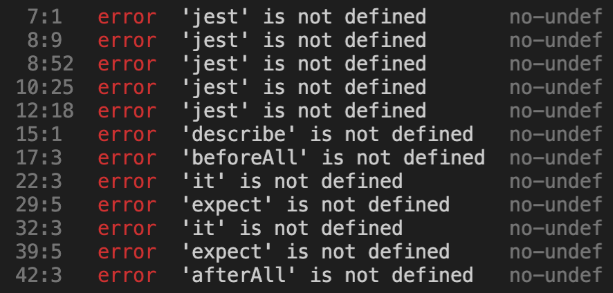

Flujo de desarrollo del proyecto
En el capítulo 3 creamos el monorepo con las partes Frontend y Backend que van a conformar nuestra plataforma pero no configuramos herramientas para el manejo global del proyecto.
Implementaremos una forma de revisión de la plataforma para que podamos estandarizar tareas. En esta oportunidad vamos a configurar un script pre-commit y de pre-push que nos ayuden a mantener prácticas estandarizadas y nos ayuden con la calidad de la plataforma en su totalidad de forma asegurarnos que cada vez que se quiera agregar código al repositorio central, este mantenga su calidad.
Nuestro proyecto en la raíz debería verse como en el siguiente esquema:
.
├── backend
├── fixtures
└── frontend
.gitignore
En la raíz del proyecto vamos a ejecutar el siguiente comando:
npm init -f
Esto nos creará un archivo como el que se muestra a continuación.
{
"name": "<nombre-de-tu-proyecto>",
"version": "1.0.0",
"description": "",
"scripts": {
"test": "echo \"Error: no test specified\" && exit 1"
},
"keywords": [],
"author": "",
"license": "ISC"
}
Notar que no usaremos la propiedad main, por lo que la eliminamos del archivo.
Instalaremos los paquetes necesarios con el siguiente comando:
npm install husky npm-run-all
Ya tenemos los paquetes necesarios para poder correr scripts asociados a las acciones de git, en este caso Husky que es la herramienta que nos ayudará a hacer esto y npm-run-all que ejecutará las tareas para el frontend y backend en simultáneo.
Como necesitamos estandarizar las tareas de calidad de código, nos está faltando algo: Necesitamos configurar el linter en Backend con el mismo estándar configurado por Vue para el Frontend.
Configurar linter en el backend
Nos aseguramos de navegar hacia la carpeta backend y en su interior ejecutamos el siguiente comando:
npm install --save-dev eslint
Ahora modificaremos la sección scripts del archivo backend/package.json y vamos a exponer el comando eslint como se muestra en el siguiente trozo de código:
"scripts": {
"start": "nodemon src/server.js",
"test": "jest --runInBand --coverage",
"eslint": "eslint",
"jest": "jest",
"sequelize": "sequelize"
},
Ahora vamos a inicializar Eslint corriendo el siguiente comando:
npm run eslint -- --init
Se nos harán una serie de pregunta. Nos aseguraremos de contestarlas con las respuestas que muestra la siguiente imagen:

El archivo generado por Eslint debería haber quedado de la siguiente forma:
backend/.eslintrc
module.exports = {
"env": {
"commonjs": true,
"es2021": true,
"node": true
},
"extends": "eslint:recommended",
"parserOptions": {
"ecmaVersion": 12
},
"rules": {
}
};
Ahora agregaremos un nuevo script que será el encargado de ejecutar el linter para este proyecto. Volvemos a la sección script del archivo backend/package.json y debería verse de la siguiente forma:
"scripts": {
"start": "nodemon src/server.js",
"test": "jest --runInBand --coverage",
"lint": "eslint .",
"eslint": "eslint",
"jest": "jest",
"sequelize": "sequelize"
},
Ahora podremos ejecutar el siguiente comando desde la raíz del directorio backend:
npm run lint
Al ejecutar el comando podremos ver todos los errores asociados al estándar que estamos siguiendo con Eslint, pero también veremos otros errores que están relacionados al Framework para pruebas que estamos usando: Jest. Estos errores se ven como se muestra en la siguiente imagen:

Esto sucede porque el estándar por defecto que instalamos con Eslint no viene preparado para ver los archivos de Jest. Para esto instalaremos un plugin de Eslint con el siguiente comando ejecutado en la raíz del directorio backend:
npm i --save-dev eslint-plugin-jest
y reemplazamos el contenido del archivo backend/.eslintsrc con el siguiente contenido:
module.exports = {
"env": {
"commonjs": true,
"es2021": true,
"node": true,
"jest/globals": true
},
"extends": "eslint:recommended",
"plugins": [
"jest"
],
"parserOptions": {
"ecmaVersion": 12
},
"rules": {
}
};
Con esta configuración ya somos capaces de corregir los errores que nos indique Eslint sin problemas corriendo el comando npm run lint.
Una vez que solucionemos todo los problemas y guardemos los archivos que hemos debido modificar para pasar el linter del lado backend, iremos a la carpeta frontend y estando en la raíz de este directorio ejecutaremos:
npm run lint
Ahora revisamos si es que existen archivos que tengan problemas. De ser así solucionamos los problemas y guardamos los archivos.
Scripts de pre-commit y pre-push para el proyecto
Volveremos a la raíz del proyecto e iremos al archivo package.json y modificaremos la sección scripts para que quede de la siguiente manera:
"scripts": {
"frontend-test:unit": "cd frontend && npm run test:unit",
"frontend-lint": "cd frontend && npm run lint",
"backend-lint": "cd backend && npm run lint",
"backend-test": "cd backend && npm test",
"pre-commit": "npm-run-all frontend-lint backend-lint",
"pre-push": "npm-run-all frontend-test:unit backend-test",
"husky": "husky"
},
Podemos probar estos scripts primero corriendo los comandos
npm run pre-commit
y luego
npm run pre-push
Deberíamos a estas alturas tener todos los linter tanto de Frontend como Backend pasando, así como las pruebas unitarias.
Nos queda un último paso que sería que estos scripts se activen cada vez que hacemos commit o push de nuestro código.
####
Instalar husky
npm run husky install
Veras que se configuro una nueva carpeta en la raíz llamada .husky Ahora ejecutaremos lo siguiente:
npm run husky add .husky/pre-commit "npm run pre-commit"
npm run husky add .husky/pre-push "npm run pre-push"
ahora veremos que dentro del directorio llamado .husky hay 2 nuevos archivos. Si revisamos su interior deberíamos ver lo siguiente:
.husky/pre-commit
#!/bin/sh
. "$(dirname "$0")/_/husky.sh"
npm run pre-commit
.husky/pre-push
#!/bin/sh
. "$(dirname "$0")/_/husky.sh"
npm run pre-push
Ahora podemos probar que todo esta funcionando. Primero haremos un commit y veremos como es que se corren los linters de los proyectos Frontend y Backend.
git add .
git commit -m "chore(dev-scripts): se agregaron scripts de pre-commit y pre-push para asegurar la calidad de la plataforma"
Veremos como al hacer esto se corre el script pre-commit. Si todo salió bien el commit debería hacerse sin problemas.
- CONFIGURAR TU REMOTO
al final
git push origin main
veremos como corren las pruebas antes de que se haga la subida del código a tu repositorio remoto.
Ya estamos preparados para subir a producción nuestro proyecto en el siguiente capítulo.